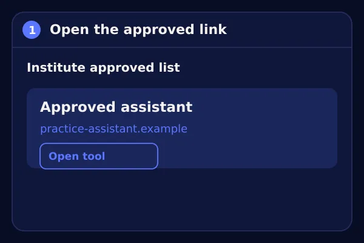

Step 1 · Set up your tool
Set up your AI tool in 4 short steps.
Do each step in the AI tool that your institute has approved.
Your task. Set up your AI tool, then tick each step when you finish it.

Step 2 · Ask and capture
Ask the AI tool, then save exactly what it says.
Your task. Enter the prompt in the approved AI tool. Record the first answer here.
Copy the provided prompt into the approved AI tool, then record what you entered.
Enter the AI response you received after using the provided prompt.
For example: copied the text, took a screenshot, or wrote a transcript.
Step 3 · Check with the check card
Check the AI answer against the source.
Your task. Compare the first answer with the check card, then answer all three questions.
Step 3 · Check with the check card
Your AI didn’t slip up. Check this one instead.
Your task. Another learner used the same prompt and got the response below. Check it against the card, then answer all three questions.
The example output for this prompt has not been added to the page yet. Paste the response your facilitator gives you.
Step 4 · Revise the prompt
A better prompt gets a better answer. Test it.
Your task. Write your revised prompt, run it in the same AI tool, and record the second answer.
Step 5 · Compare the outputs
Put the two answers side by side.
Your task. Read both answers, choose whether the answer improved, then explain.
Step 6 · Save your evidence
Check your record, then download it.
Your task. Tick every checklist box, write one sentence to remember, then download your report.
After saving the PDF, sign out of the approved AI tool in its own tab. Then clear your entries here.